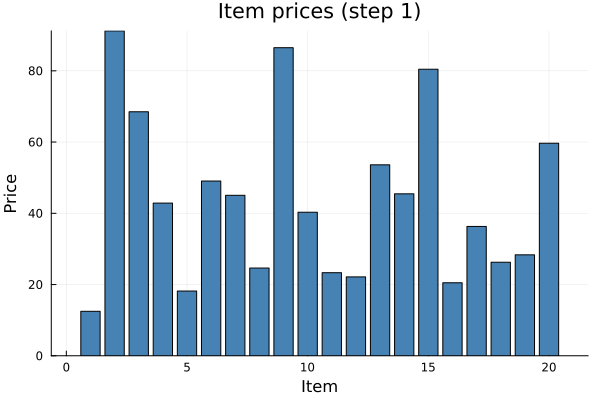
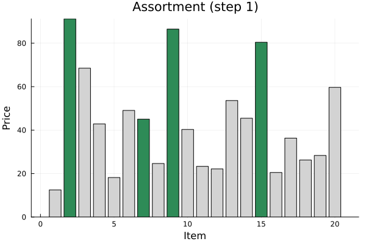
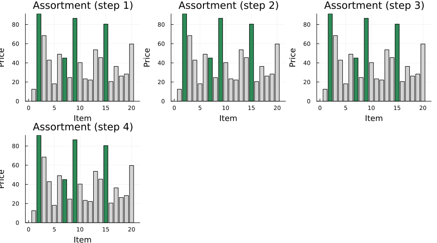

Dynamic Assortment
Select which K items to offer at each step to maximize revenue: customer preferences evolve dynamically based on purchase history (hype and saturation effects).
using DecisionFocusedLearningBenchmarks
using Plots
b = DynamicAssortmentBenchmark()DynamicAssortmentBenchmark{false, Flux.Chain{Tuple{Flux.Dense{typeof(identity), Matrix{Float64}, Vector{Float64}}, typeof(vec)}}}(Chain(Dense(5 => 1), vec), 20, 2, 4, 80)Observable input
Generate one environment and roll it out with the greedy policy to collect a sample trajectory. At each step the agent observes item prices, hype levels, saturation, and purchase history:
policies = generate_baseline_policies(b)
env = generate_environments(b, 1)[1]
_, trajectory = evaluate_policy!(policies.expert, env)(649.113285050237, DataSample{@NamedTuple{instance::Tuple{Matrix{Float64}, Vector{Int64}}}, @NamedTuple{reward::Float64, step::Int64}, Matrix{Float64}, BitVector, Nothing}[DataSample(x=[0.124946 0.912115 … 0.283427 0.596726; 0.458569 0.869146 … 0.937479 0.587443; … ; 0.0 0.0 … 0.0 0.0; 0.0125 0.0125 … 0.0125 0.0125], y=Bool[0, 1, 0, 0, 0, 0, 1, 0, 1, 0, 0, 0, 0, 0, 1, 0, 0, 0, 0, 0], instance=([1.24946 9.12115 … 2.83427 5.96726; 4.58569 8.69146 … 9.37479 5.87443; … ; 3.30572 7.5694 … 5.51002 7.36269; 4.65489 5.00808 … 7.29818 7.26029], Int64[]), reward=9.12115, step=1), DataSample(x=[0.124946 0.912115 … 0.283427 0.596726; 0.458569 0.886529 … 0.937479 0.587443; … ; 0.0 0.00638838 … 0.0 0.0; 0.025 0.025 … 0.025 0.025], y=Bool[0, 1, 0, 0, 0, 0, 1, 0, 1, 0, 0, 0, 0, 0, 1, 0, 0, 0, 0, 0], instance=([1.24946 9.12115 … 2.83427 5.96726; 4.58569 8.86529 … 9.37479 5.87443; … ; 3.30572 7.5694 … 5.51002 7.36269; 4.65489 5.00808 … 7.29818 7.26029], [2]), reward=8.04326, step=2), DataSample(x=[0.124946 0.912115 … 0.283427 0.596726; 0.458569 0.882097 … 0.937479 0.587443; … ; 0.0 0.00638838 … 0.0 0.0; 0.0375 0.0375 … 0.0375 0.0375], y=Bool[0, 1, 0, 0, 0, 0, 1, 0, 1, 0, 0, 0, 0, 0, 1, 0, 0, 0, 0, 0], instance=([1.24946 9.12115 … 2.83427 5.96726; 4.58569 8.82097 … 9.37479 5.87443; … ; 3.30572 7.5694 … 5.51002 7.36269; 4.65489 5.00808 … 7.29818 7.26029], [2, 15]), reward=8.04326, step=3), DataSample(x=[0.124946 0.912115 … 0.283427 0.596726; 0.458569 0.877686 … 0.937479 0.587443; … ; 0.0 0.00638838 … 0.0 0.0; 0.05 0.05 … 0.05 0.05], y=Bool[0, 1, 0, 0, 0, 0, 1, 0, 1, 0, 0, 0, 0, 0, 1, 0, 0, 0, 0, 0], instance=([1.24946 9.12115 … 2.83427 5.96726; 4.58569 8.77686 … 9.37479 5.87443; … ; 3.30572 7.5694 … 5.51002 7.36269; 4.65489 5.00808 … 7.29818 7.26029], [2, 15, 15]), reward=8.04326, step=4), DataSample(x=[0.124946 0.912115 … 0.283427 0.596726; 0.458569 0.873298 … 0.937479 0.587443; … ; 0.0 0.00638838 … 0.0 0.0; 0.0625 0.0625 … 0.0625 0.0625], y=Bool[0, 1, 0, 0, 0, 0, 1, 0, 1, 0, 0, 0, 0, 0, 1, 0, 0, 0, 0, 0], instance=([1.24946 9.12115 … 2.83427 5.96726; 4.58569 8.73298 … 9.37479 5.87443; … ; 3.30572 7.5694 … 5.51002 7.36269; 4.65489 5.00808 … 7.29818 7.26029], [2, 15, 15, 15]), reward=8.04326, step=5), DataSample(x=[0.124946 0.912115 … 0.283427 0.596726; 0.458569 0.868931 … 0.937479 0.587443; … ; 0.0 0.00638838 … 0.0 0.0; 0.075 0.075 … 0.075 0.075], y=Bool[0, 1, 0, 0, 0, 0, 1, 0, 1, 0, 0, 0, 0, 0, 1, 0, 0, 0, 0, 0], instance=([1.24946 9.12115 … 2.83427 5.96726; 4.58569 8.68931 … 9.37479 5.87443; … ; 3.30572 7.5694 … 5.51002 7.36269; 4.65489 5.00808 … 7.29818 7.26029], [2, 15, 15, 15, 15]), reward=8.04326, step=6), DataSample(x=[0.124946 0.912115 … 0.283427 0.596726; 0.458569 0.868931 … 0.937479 0.587443; … ; 0.0 0.00638838 … 0.0 0.0; 0.0875 0.0875 … 0.0875 0.0875], y=Bool[0, 1, 0, 0, 0, 0, 1, 0, 1, 0, 0, 0, 0, 0, 1, 0, 0, 0, 0, 0], instance=([1.24946 9.12115 … 2.83427 5.96726; 4.58569 8.68931 … 9.37479 5.87443; … ; 3.30572 7.5694 … 5.51002 7.36269; 4.65489 5.00808 … 7.29818 7.26029], [2, 15, 15, 15, 15, 15]), reward=8.64794, step=7), DataSample(x=[0.124946 0.912115 … 0.283427 0.596726; 0.458569 0.868931 … 0.937479 0.587443; … ; 0.0 0.00638838 … 0.0 0.0; 0.1 0.1 … 0.1 0.1], y=Bool[0, 1, 0, 0, 0, 0, 1, 0, 1, 0, 0, 0, 0, 0, 1, 0, 0, 0, 0, 0], instance=([1.24946 9.12115 … 2.83427 5.96726; 4.58569 8.68931 … 9.37479 5.87443; … ; 3.30572 7.5694 … 5.51002 7.36269; 4.65489 5.00808 … 7.29818 7.26029], [2, 15, 15, 15, 15, 15, 9]), reward=8.04326, step=8), DataSample(x=[0.124946 0.912115 … 0.283427 0.596726; 0.458569 0.868931 … 0.937479 0.587443; … ; 0.0 0.00638838 … 0.0 0.0; 0.1125 0.1125 … 0.1125 0.1125], y=Bool[0, 1, 0, 0, 0, 0, 1, 0, 1, 0, 0, 0, 0, 0, 1, 0, 0, 0, 0, 0], instance=([1.24946 9.12115 … 2.83427 5.96726; 4.58569 8.68931 … 9.37479 5.87443; … ; 3.30572 7.5694 … 5.51002 7.36269; 4.65489 5.00808 … 7.29818 7.26029], [2, 15, 15, 15, 15, 15, 9, 15]), reward=8.04326, step=9), DataSample(x=[0.124946 0.912115 … 0.283427 0.596726; 0.458569 0.868931 … 0.937479 0.587443; … ; 0.0 0.00638838 … 0.0 0.0; 0.125 0.125 … 0.125 0.125], y=Bool[0, 1, 0, 0, 0, 0, 1, 0, 1, 0, 0, 0, 0, 0, 1, 0, 0, 0, 0, 0], instance=([1.24946 9.12115 … 2.83427 5.96726; 4.58569 8.68931 … 9.37479 5.87443; … ; 3.30572 7.5694 … 5.51002 7.36269; 4.65489 5.00808 … 7.29818 7.26029], [2, 15, 15, 15, 15, 15, 9, 15, 15]), reward=8.04326, step=10) … DataSample(x=[0.124946 0.912115 … 0.283427 0.596726; 0.458569 0.868501 … 0.937479 0.587443; … ; 0.0 0.0193574 … 0.0 0.0; 0.8875 0.8875 … 0.8875 0.8875], y=Bool[0, 1, 0, 0, 0, 0, 1, 0, 1, 0, 0, 0, 0, 0, 1, 0, 0, 0, 0, 0], instance=([1.24946 9.12115 … 2.83427 5.96726; 4.58569 8.68501 … 9.37479 5.87443; … ; 3.30572 7.5694 … 5.51002 7.36269; 4.65489 5.00808 … 7.29818 7.26029], [2, 15, 15, 15, 15, 15, 9, 15, 15, 15 … 15, 15, 15, 15, 15, 15, 15, 15, 15, 15]), reward=8.04326, step=71), DataSample(x=[0.124946 0.912115 … 0.283427 0.596726; 0.458569 0.868501 … 0.937479 0.587443; … ; 0.0 0.0193574 … 0.0 0.0; 0.9 0.9 … 0.9 0.9], y=Bool[0, 1, 0, 0, 0, 0, 1, 0, 1, 0, 0, 0, 0, 0, 1, 0, 0, 0, 0, 0], instance=([1.24946 9.12115 … 2.83427 5.96726; 4.58569 8.68501 … 9.37479 5.87443; … ; 3.30572 7.5694 … 5.51002 7.36269; 4.65489 5.00808 … 7.29818 7.26029], [2, 15, 15, 15, 15, 15, 9, 15, 15, 15 … 15, 15, 15, 15, 15, 15, 15, 15, 15, 15]), reward=8.04326, step=72), DataSample(x=[0.124946 0.912115 … 0.283427 0.596726; 0.458569 0.868501 … 0.937479 0.587443; … ; 0.0 0.0193574 … 0.0 0.0; 0.9125 0.9125 … 0.9125 0.9125], y=Bool[0, 1, 0, 0, 0, 0, 1, 0, 1, 0, 0, 0, 0, 0, 1, 0, 0, 0, 0, 0], instance=([1.24946 9.12115 … 2.83427 5.96726; 4.58569 8.68501 … 9.37479 5.87443; … ; 3.30572 7.5694 … 5.51002 7.36269; 4.65489 5.00808 … 7.29818 7.26029], [2, 15, 15, 15, 15, 15, 9, 15, 15, 15 … 15, 15, 15, 15, 15, 15, 15, 15, 15, 15]), reward=8.04326, step=73), DataSample(x=[0.124946 0.912115 … 0.283427 0.596726; 0.458569 0.868501 … 0.937479 0.587443; … ; 0.0 0.0193574 … 0.0 0.0; 0.925 0.925 … 0.925 0.925], y=Bool[0, 1, 0, 0, 0, 0, 1, 0, 1, 0, 0, 0, 0, 0, 1, 0, 0, 0, 0, 0], instance=([1.24946 9.12115 … 2.83427 5.96726; 4.58569 8.68501 … 9.37479 5.87443; … ; 3.30572 7.5694 … 5.51002 7.36269; 4.65489 5.00808 … 7.29818 7.26029], [2, 15, 15, 15, 15, 15, 9, 15, 15, 15 … 15, 15, 15, 15, 15, 15, 15, 15, 15, 15]), reward=8.04326, step=74), DataSample(x=[0.124946 0.912115 … 0.283427 0.596726; 0.458569 0.868501 … 0.937479 0.587443; … ; 0.0 0.0193574 … 0.0 0.0; 0.9375 0.9375 … 0.9375 0.9375], y=Bool[0, 1, 0, 0, 0, 0, 1, 0, 1, 0, 0, 0, 0, 0, 1, 0, 0, 0, 0, 0], instance=([1.24946 9.12115 … 2.83427 5.96726; 4.58569 8.68501 … 9.37479 5.87443; … ; 3.30572 7.5694 … 5.51002 7.36269; 4.65489 5.00808 … 7.29818 7.26029], [2, 15, 15, 15, 15, 15, 9, 15, 15, 15 … 15, 15, 15, 15, 15, 15, 15, 15, 15, 15]), reward=8.04326, step=75), DataSample(x=[0.124946 0.912115 … 0.283427 0.596726; 0.458569 0.868501 … 0.937479 0.587443; … ; 0.0 0.0193574 … 0.0 0.0; 0.95 0.95 … 0.95 0.95], y=Bool[0, 1, 0, 0, 0, 0, 1, 0, 1, 0, 0, 0, 0, 0, 1, 0, 0, 0, 0, 0], instance=([1.24946 9.12115 … 2.83427 5.96726; 4.58569 8.68501 … 9.37479 5.87443; … ; 3.30572 7.5694 … 5.51002 7.36269; 4.65489 5.00808 … 7.29818 7.26029], [2, 15, 15, 15, 15, 15, 9, 15, 15, 15 … 15, 15, 15, 15, 15, 15, 15, 15, 15, 15]), reward=8.04326, step=76), DataSample(x=[0.124946 0.912115 … 0.283427 0.596726; 0.458569 0.868501 … 0.937479 0.587443; … ; 0.0 0.0193574 … 0.0 0.0; 0.9625 0.9625 … 0.9625 0.9625], y=Bool[0, 1, 0, 0, 0, 0, 1, 0, 1, 0, 0, 0, 0, 0, 1, 0, 0, 0, 0, 0], instance=([1.24946 9.12115 … 2.83427 5.96726; 4.58569 8.68501 … 9.37479 5.87443; … ; 3.30572 7.5694 … 5.51002 7.36269; 4.65489 5.00808 … 7.29818 7.26029], [2, 15, 15, 15, 15, 15, 9, 15, 15, 15 … 15, 15, 15, 15, 15, 15, 15, 15, 15, 15]), reward=8.04326, step=77), DataSample(x=[0.124946 0.912115 … 0.283427 0.596726; 0.458569 0.868501 … 0.937479 0.587443; … ; 0.0 0.0193574 … 0.0 0.0; 0.975 0.975 … 0.975 0.975], y=Bool[0, 1, 0, 0, 0, 0, 1, 0, 1, 0, 0, 0, 0, 0, 1, 0, 0, 0, 0, 0], instance=([1.24946 9.12115 … 2.83427 5.96726; 4.58569 8.68501 … 9.37479 5.87443; … ; 3.30572 7.5694 … 5.51002 7.36269; 4.65489 5.00808 … 7.29818 7.26029], [2, 15, 15, 15, 15, 15, 9, 15, 15, 15 … 15, 15, 15, 15, 15, 15, 15, 15, 15, 15]), reward=8.64794, step=78), DataSample(x=[0.124946 0.912115 … 0.283427 0.596726; 0.458569 0.868501 … 0.937479 0.587443; … ; 0.0 0.0193574 … 0.0 0.0; 0.9875 0.9875 … 0.9875 0.9875], y=Bool[0, 1, 0, 0, 0, 0, 1, 0, 1, 0, 0, 0, 0, 0, 1, 0, 0, 0, 0, 0], instance=([1.24946 9.12115 … 2.83427 5.96726; 4.58569 8.68501 … 9.37479 5.87443; … ; 3.30572 7.5694 … 5.51002 7.36269; 4.65489 5.00808 … 7.29818 7.26029], [2, 15, 15, 15, 15, 15, 9, 15, 15, 15 … 15, 15, 15, 15, 15, 15, 15, 15, 15, 9]), reward=8.04326, step=79), DataSample(x=[0.124946 0.912115 … 0.283427 0.596726; 0.458569 0.868501 … 0.937479 0.587443; … ; 0.0 0.0193574 … 0.0 0.0; 1.0 1.0 … 1.0 1.0], y=Bool[0, 1, 0, 0, 0, 0, 1, 0, 1, 0, 0, 0, 0, 0, 1, 0, 0, 0, 0, 0], instance=([1.24946 9.12115 … 2.83427 5.96726; 4.58569 8.68501 … 9.37479 5.87443; … ; 3.30572 7.5694 … 5.51002 7.36269; 4.65489 5.00808 … 7.29818 7.26029], [2, 15, 15, 15, 15, 15, 9, 15, 15, 15 … 15, 15, 15, 15, 15, 15, 15, 15, 9, 15]), reward=8.64794, step=80)])The observable state at step 1: item prices (fixed across steps):
plot_context(b, trajectory[1])
A training sample
Each step in a trajectory is a labeled tuple (x, θ, y) plus state and reward:
x:(d+8) × Nfeature matrix per step (prices, hype, saturation, history, time)θ: predicted utility score per itemy: offered assortment at this step (BitVector of length N, true = offered)instance: full state tuple (features matrix, purchase history)reward: price of the purchased item (0 if no purchase)
One step with the offered assortment highlighted (green = offered):
plot_sample(b, trajectory[1])
A few steps side by side (prices are fixed; assortment composition changes over time):
plot_trajectory(b, trajectory[1:min(4, length(trajectory))])
DFL pipeline components
The DFL agent chains two components: a neural network predicting utility scores per item:
model = generate_statistical_model(b) # MLP: state features → predicted utility per itemChain(
Dense(10 => 5), # 55 parameters
Dense(5 => 1), # 6 parameters
vec,
) # Total: 4 arrays, 61 parameters, 452 bytes.and a maximizer offering the K items with the highest predicted utilities:
maximizer = generate_maximizer(b) # top-K selection by predicted utilityDecisionFocusedLearningBenchmarks.Utils.TopKMaximizer(4)At each step, the model maps the current state (prices, hype, saturation, history) to a utility score per item. The maximizer selects the K items with the highest scores.
Problem Description
Overview
In the Dynamic Assortment problem, a retailer has $N$ items and must select $K$ to offer at each time step. Customer preferences evolve based on purchase history through hype (recent purchases increase demand) and saturation (repeated purchases slightly decrease demand).
Mathematical Formulation
State $s_t = (p, f, h_t, \sigma_t, t, \mathcal{H}_t)$ where:
- $p$: fixed item prices
- $f$: static item features
- $h_t, \sigma_t$: current hype and saturation levels
- $t$: current time step
- $\mathcal{H}_t$: purchase history (last 5 purchases)
Action: $a_t \subseteq \{1,\ldots,N\}$ with $|a_t| = K$
Customer choice (multinomial logit):
\[\mathbb{P}(i \mid a_t, s_t) = \frac{\exp(\theta_i(s_t))}{\sum_{j \in a_t} \exp(\theta_j(s_t)) + 1}\]
Transition dynamics:
- Hype: $h_{t+1}^{(i)} = h_t^{(i)} \times m^{(i)}$ where the multiplier reflects recent purchases
- Saturation: increases by ×1.01 for the purchased item
Reward: $r(s_t, a_t) = p_{i^\star}$ (price of the purchased item, 0 if no purchase)
Objective:
\[\max_\pi \; \mathbb{E}\!\left[\sum_{t=1}^T r(s_t, \pi(s_t))\right]\]
Key Components
DynamicAssortmentBenchmark
| Parameter | Description | Default |
|---|---|---|
N | Number of items in catalog | 20 |
d | Static feature dimension per item | 2 |
K | Assortment size | 4 |
max_steps | Steps per episode | 80 |
exogenous | Whether dynamics are exogenous | false |
State Observation
Agents observe a $(d+8) \times N$ normalized feature matrix per step containing: current prices, hype, saturation, static features, change in hype/saturation from previous step and from initial state, and normalized time step.
Baseline Policies
| Policy | Description |
|---|---|
| Expert | Brute-force enumeration of all $\binom{N}{K}$ subsets; optimal but slow |
| Greedy | Selects the $K$ items with highest prices |
DFL Policy
\[\xrightarrow[\text{State}]{s_t} \fbox{Neural network $\varphi_w$} \xrightarrow[\text{Utilities}]{\theta \in \mathbb{R}^N} \fbox{Top-K} \xrightarrow[\text{Assortment}]{a_t}\]
Model: Chain(Dense(d+8 → 5), Dense(5 → 1), vec): predicts one utility score per item from the current state features.
Maximizer: TopKMaximizer(K): selects the top $K$ items by predicted utility.
This page was generated using Literate.jl.